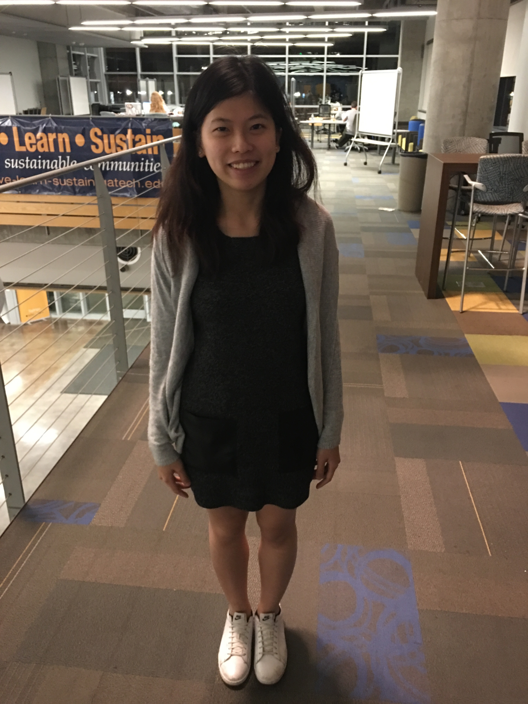

PhD Scholar
Department of Electrical Engineering and Computer Sciences
University of California, Berkeley
Email: yuwen.lin (at) berkeley.edu
Office: CREST Lab, 406 Cory Hall
I am interested in optimization, machine learning, control systems and their applications to smart buildings. My directions of research include reinforcement learning on building control, modeling human behavior, and social game. My research analyzes human behavior to maximize human's comfort as well as improve energy efficiency in office buildings.
I am a second year PhD student in EECS at UC Berkeley. I am working at the intersection of machine learning, optimization, and thermal comfort. I am advised by Costas J. Spanos, and am part of the Singapore-Berkeley Building Efficiency and Sustainability in the Tropics (SinBerBEST) and RAISE lab.